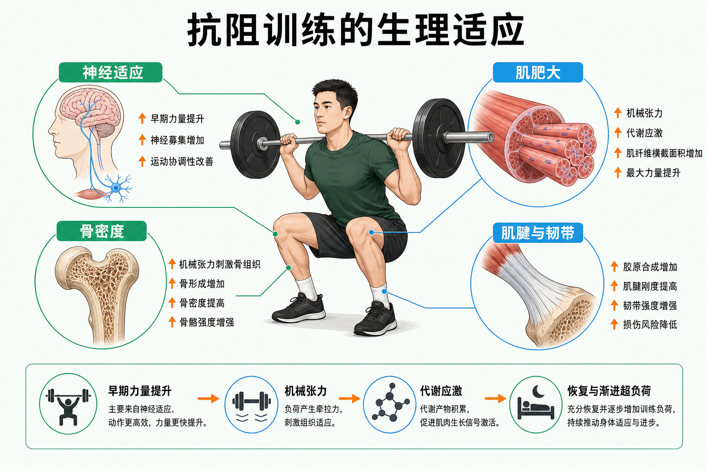

Day 35 · 抗阻训练的生理适应
把“新手力量为什么先涨”和“长期训练到底改变了什么”放进同一张适应地图。
一句话总结
抗阻训练像给身体发出反复、可恢复的施工指令：早期主要是神经系统更会用力；随后肌纤维、骨和结缔组织在机械张力、代谢应激与恢复中逐步升级。力量增长不等于只长肌肉。

从深蹲动作出发，依次看神经、肌肉、骨与肌腱韧带如何响应训练刺激。
核心要点
- GAS 一般适应综合征：训练压力先触发警觉，恢复中进入抵抗；压力长期超过恢复能力才可能走向衰竭。底层机制
GAS 是理解适应的框架，不是每次训练都机械经历三个整齐阶段。训练造成扰动，恢复资源足够时身体把系统修到略高于原有水平。
训练含义同一训练量对新手是明显刺激，对老手可能只是维持；渐进超负荷要跟着实际恢复和表现走，而不是只加重量。
常见误解✕ 酸痛越久说明适应越好。✓ 酸痛只是信号之一；持续表现下降、睡眠变差和情绪异常才更值得警惕。
- 神经适应：新手前 1-2 周的力量增长，常先来自募集更多运动单位、提高放电频率与协同效率。训练含义
字面意思
运动单位是一个运动神经元和它控制的一群肌纤维。募集更多、放电更有效，等于在同一块肌肉里调动了更多可用“工人”。
大白话
不是发动机立刻变大，而是驾驶员先学会踩准油门、让更多气缸配合工作。
真实例子
刚开始练深蹲的人，动作更稳定、发力顺序更协调后，即使围度变化不大，重量也会明显上升。
新手应优先练稳定动作、可控幅度和规律练习。频繁换动作或每次都练到力竭，会降低技术学习质量。
- 肌肥大：以肌纤维横截面积增大为主；成人肌纤维“增生”仍有争议，不能当作常规训练结论。底层机制
持续训练后，肌原纤维等收缩结构增加，单条肌纤维更粗。蛋白质合成需要在训练刺激、能量与蛋白质供应、睡眠恢复共同具备时长期占优。
真实例子同一人手臂围度的变化需要数周到数月观察；一堂训练后的“泵感”主要是血流和体液暂时改变，不能等同于肌肉已长大。
常见误解✕ 只要练到酸痛就一定增肌。✓ 有效的长期剂量、接近但不必每组力竭的努力、营养与恢复更关键。
- 三大增肌相关刺激：机械张力是主线，代谢应激与肌肉损伤是伴随因素，不是越多越好。
常见误解因素 是什么 训练判断 机械张力 肌纤维在负荷下产生并承受的拉力 够重、够接近力竭、动作可控，都能提供张力 代谢应激 重复收缩中代谢产物、局部缺氧等环境变化 中高次数和短休息可增加，但不能替代张力 肌肉损伤 不熟悉或离心压力带来的结构扰动 不是目标；过多损伤反而拖慢下一次高质量训练 ✕ 延迟性酸痛越严重，增肌越快。✓ 酸痛很重可能意味着新刺激或恢复成本高，不是进步的计分板。
- 骨密度与 Wolff 定律：骨会依据承受的、足够且渐进的机械负荷重塑；承重抗阻是骨健康的重要刺激。底层机制
骨细胞感受应力后调节骨形成与吸收。蹲、硬拉、推、拉等承重模式提供的力学环境，与单纯不负重活动不同。
训练含义对久坐、年龄增长或骨健康风险较高的人，先做筛查并从安全的承重动作、稳定技术与渐进负荷开始。
常见误解✕ 只要补钙就能替代训练。✓ 钙、维生素 D、能量供应和力学刺激共同影响骨健康。
- 肌腱与韧带适应更慢：结缔组织会提高胶原合成和承载能力，但时间尺度通常慢于肌肉和神经。大白话
肌肉像换得快的引擎，肌腱和韧带更像桥梁钢缆。引擎很快变强，钢缆却需要更久才能适应新的牵拉。
训练含义力量进步很快时尤其要避免跳跃式加量。保留动作控制、安排恢复日，并观察关节附近的持续疼痛而不是硬顶。
常见误解✕ 没有肌肉酸痛就不需要恢复。✓ 肌肉不酸不代表肌腱、关节或整体疲劳已经准备好再加量。
- 内分泌急性反应：一次抗阻训练会出现睾酮、生长激素、皮质醇等短暂波动，但它们不是决定增肌的单一开关。底层机制
急性激素反应反映系统对压力的调节。长期身体组成和力量改变，更直接取决于局部机械张力、训练总量、营养、恢复和个体差异。
训练含义不必为了“追激素峰值”设计复杂动作组合；优先选择可渐进、可重复、能长期坚持的计划。
常见误区
✕ 很多人以为新手力量涨得快，说明肌肉已经迅速变大。✓ 前期常是神经募集、协调和技术进步先发生。
✕ 很多人以为每组练到完全力竭才能增肌。✓ 接近力竭即可形成有效刺激；是否力竭要结合动作风险、训练量和恢复能力。
✕ 很多人以为骨和肌腱会跟肌肉一样快适应。✓ 结缔组织通常更慢，快速加量是常见风险来源。
记忆口诀
“神经先会用，肌肉再变粗；骨靠承重塑，肌腱慢慢筑；张力是主线，恢复才进步。”
翻转卡复习
实操关联
- 增肌：用稳定动作累积可恢复训练量，优先保证机械张力、蛋白质与睡眠。
- 减脂：保留抗阻训练以维持或增加肌肉；热量缺口过大时，恢复与力量表现更值得监控。
- 爆发：先用力量和技术改善神经募集，再逐步加入速度训练，而非只追求疲劳。
- 耐力：抗阻训练可提高局部力量与结缔组织承受力，帮助经济性和抗疲劳。
- 康复回归：疼痛和组织耐受要比“肌肉有没有酸”更优先；遵循专业转介建议。